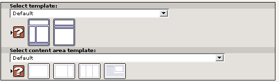
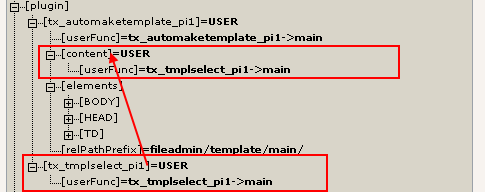

template_2.gif:
Extension key: doc_tut_templselect2
Copyright 2003,
This document is published under the Open Content License
available from http://www.opencontent.org/opl.shtml
The content of this document is related to TYPO3
- a GNU/GPL CMS/Framework available from www.typo3.com
Modern Template Building, Part 2+3 1
Introduction 1
What does it do? 1
Part 2: Creating a Template Selector 2
Introduction 2
Preparations 3
Investigating the source material 4
Creating an extension 12
Modifying item arrays (backend) 14
Reading the selected template (frontend) 20
A TypoScript session for Mr. Benoit 25
The content area template 28
Real content in the columns 30
Setting the default template with a constant 33
Configuration of the template paths 35
Conclusions 36
Part 3: Extending the Built-In Access Scheme 38
Introduction 38
The theory of "enablefields" 38
Extending the t3lib_pageSelect class 39
Changing the "fe_group" field 42
Adding our custom "enablecolumn" type 43
Access control on user level? 44
Extending access control for pages 44
This is Part 2 and 3 of the tutorial "Modern Template Building" from the "doc_tut_templselect" extension.
For developers on intermediate to expert level.
For further introduction see the intro-section of Part 1.
Part 1 of this tutorial contained:
The Basics - a newbee introduction to building websites with TYPO3, template records, TypoScript and Content Objects (cObjects). Any person who wants to develop with TYPO3 should be familiar with the concept described here.
Part 1: Integration of an HTML template - this part aims specifically at intermediate HTML-webdesigners with a limited amount of technical knowledge.
Notice: The Basics and Part 1 are found in another document, in the extension "doc_tut_templselect"
This part (2+3) contains:
Part 2: Creating a Template Selector - this part aims at intermediate web developer with good knowledge of PHP, SQL and programming concepts in general.
Part 3: Extending the Built-In Access Scheme - for advanced TYPO3/PHP-developers.
Most websites will do fine having only one main template and nothing more. Normally alternative designs are only about substitution of a single image or a stylesheet and most likely such changes are supposed to work within a certain level of the page tree. For instance a customer service section might have its own header image to set the environment of that section. Or another common feature is to have a totally different template for the frontpage, possibly some kind of entrance choice. These features can often be done without invoking a whole new template file (except from the unique front page of course) but simply by setting some conditional properties inside the template record.
However we will now take the basic example from the previous section in this tutorial and expand it heavily so that instead of one template file we can select from any number of template files per page and per section. Further we want the content area to be more flexible having different sub-templates for columns, news sections etc. And all this should be made so flexible that new templates can be added by Mr. Raphael (the designer) simply by creating the file in the right location! At the same time the non-technical authors/editors should be able to select from these templates on a per-page basis in a visually intuitive way.
The illustration below outlines what we need in order to achieve our goal:
As you can see the main structure (light blue section) is the same as in the previous section. However the template file delivered to the "plugin.tx_automaketemplate_pi1" USER cObject must be selected based on which template file is selected for the current page/template.
Further the insertion of page content elements must be done based on the currently selected content area template which will be combined with content from one or more columns by a TEMPLATE cObject (the light yellow section).
In the backend we need to add selector boxes for the templates in the page records. The content of these selectors must be dynamically loaded by some logic that looks up template files from a designated location in the file system. Thus Mr. Raphael can add new templates by the act of just creating a new template file there!
The selectors should be equipped with icons representing the template options visually, something like this:
Intermediate to advanced web developer. Requires skills with PHP. Developer experience with TYPO3 and extension development is highly recommended.
To complete this section of the tutorial you should be a developer minded type of person. It requires you to know PHP and furthermore I'll be less explicit than in the previous section. So you will have to enable your brain during this section and figure out what's between the lines once in a while.
To complete this section of the tutorial you should perform these steps no matter if you went through the previous section or not:
Copy files: Remove old content in the
fileadmin/template/ folder, then copy the content from the folder
"part2/" of this tutorial extension to
fileadmin/template/. You should now have a directory structure with
content equal to this:
Create page tree: Unless you did the previous section of the tutorial you need to create a page structure in the database. The easiest way to do this is to import the trd-file "part1_result_pagetree.t3d" by following these steps:
Copy the file "part1/part1_result_pagetree.t3d" from the tutorial extension to "fileadmin/"
In the backend, create a new page on root level, call it "Import folder " and select the type "sysFolder".
Click the page/sysFolder icon of the new page, select "More options...", select "Import from .t3d".
Select the t3d file in the selectorbox, press preview. You should now see something like this:
Press "Import": Now, the page tree starting with "Root page" should be created inside the "Import folder".
Cut the "Root page" and paste it into the root of the tree so you get "Root page" as the first page in the tree from the top.
The "Import folder" still contains three template records which are related to the main template record on the "Root page" - let them stay in the "Import folder" and rename the folder to "Template Storage".
Install Kickstart Wizard: Make sure
the Kickstart Wizard extension ("extrep_wizard") is
installed:
Before we move on with the creation of the extension it's very important to analyse the material we have at hand here. What we will do now is a kind of reverse-enginering where we take a set of templates and figure out what subparts we will need. Normally you would work the other way around: You would define what you need, then let the designer loose. For instance you might say "I want a template with two columns, one for NORMAL column content and one for RIGHT column content." - and the designer would make that by creating a template which has two table cells with id attributes that will place the subparts for NORMAL and RIGHT column content at the right position.
The main templates Mr. Raphael made are stored in the folder "fileadmin/template/main/". There are currently two main templates there:
template_1.html:
This is the same template as in Part 1 of this tutorial.
template_2.html:
This is an alternative main template. It includes a "path-menu" (Root page > First page > ....), a horizontal menu of current-page sub items and a content area which spreads over the full width of the page.
For each of these templates Raphael also made a little icon. He gave the icons the same name as the template file, but with the "gif" extension instead:
template_1.gif:

template_2.gif:
As you can see these icons are designed to reflect the overall structure of the main templates.
Now, lets just look inside of the template_2.html file for a second:
Notice the title of the document - we will use this for the main template selector box!
This template uses an additional stylesheet!
The template has a "path-menu" in a table cell with the id "path"
The main menu is contained in a table row with id "menu_2" (#5) and each element is wrapped in a <td> element.
"menu_2" is the id of the table row (see #4)
The class "oddcell" is used for every second menu item - this will produce alternating background colors
The class "menu2-level1-act" is used to define the style for active elements in the menu.
The id "content" is used - as with template_1.html - for the table cell defining the content area of the main template.
In the folder "fileadmin/templates/sub/" we find four templates for different layouts of the content area of either of the main templates. Thus we have two main templates times four content area templates - a total of 8 possible combinations!
|
Layout |
Info |
|---|---|
|
|
ct_1.html
Single Large Content Area (default)
Icon:
|
|
|
ct_2.html
Wide Main Column, narrow right column.
Icon:
|
|
|
ct_3.html
Three even Columns (left + normal + right)
Icon:
|
|
|
ct_4.html
Single Large Content Column with News Section in Upper Right Corner.
Icon:
|
As you can see only the content area changes in Mr. Raphaels templates. In fact the menu and header image are just a background image inserted temporarily so that the content area designs could be evaluated in the right context!
Lets take a look at the source code of the template file ct_1.html:
Each template file has a page title which is carefully describing the template properties - this will in fact be the title used for the selector box inside of TYPO3s backend.
This <style> section inserts the background image and positions the <div>-section with id "contentsection" on the page. Since this is here only for guidance in the design phase we must instruct the Tempalte Auto-parser in TYPO3 to discard this section along with the <title> tag!
This stylesheet reference on the other hand defines how the content from our content area template should be rendered. We want to have this added to the header of the final page!
The <div> section "contentsection" is used in all of the content area templates to point out the content area section we want to extract!
For each of the (currently) four content area templates there is individual HTML code found inside the <div id="contentsection"> element:
(Some lines are shortened for brevity):
ct_1.html:
<div id="colNormal"> <h1>Buy PaperShredder(tm) Gizmo with 30-days money-back guarantee!</h1> <img src="../main/images/paperwork.jpg" width . . . ="0" alt="" align="right"/> <p class="bodytext">Adam Seth Enos Cainan Malelehel . . . </p> <p class="bodytext">Filii Ham Chus et M. . . </p> <br /> </div>
Simple template, using the id "colNormal" to insert page content elements from the "NORMAL" column here.
ct_2.html:
<table border="0" width="100%"> <tr> <td id="colNormal" width="390" valign="top"> <h1>Buy PaperShredder(tm) Gizmo with 30-days money-back guarantee!</h1> <img src="../main/images/paperwork.jpg" wid...0" alt="" align="right"/> <p class="bodytext">Adam Seth Enos Cainan Maleleh.../p> <p class="bodytext">Filii Ham Chus et M...</p> <br /> </td> <td width="20"></td> <td id="colRight" width="190" valign="top"> <h1>Buy PaperShredder(tm) Gizmo with 30-days money-back guarantee!</h1> <img src="../main/images/paperwork.jpg" wid...der="0" alt="" align="right"/> <p class="bodytext">Adam Seth Enos Cainan Malelehel Iar...</p> <p class="bodytext">Filii Ham Chus et Mesraim Ph...</p> <br /> </td> </tr> </table>
A table with three cells (columns) is used. The first column has the id "colNormal" which should insert page content elements from the NORMAL column. The id "colRight" inserts content elements from the RIGHT column in TYPO3.
Notice how the stylesheet in "res/stylesheet.css" specifically overrides certain properties for the content in the right column so it gets a different rendering:
. . .
/* Additional attributes for content in RIGHT column */
#colRight H1 {
font-size: 12px;
background-color: #eefffe;
text-align: center;
font-color: maroon;
}
#colRight P.bodytext {
font-size: 10px;
}
. . .
The result looks like this:
ct_3.html:
Much like ct_2.html, but with three columns in the table where every column is used for content:
<table border="0" width="100%" id="ct3"> <tr> <td id="colLeft" width="30%" valign="top"> . . . </td> <td id="colNormal" width="30%" valign="top"> . . . </td> <td id="colRight" width="30%" valign="top"> . . . </td> </tr> </table>
The ids colNormal, colLeft and colRight are used to mark up the table cells where the content for each content element column should be put.
Further notice the id="ct3" of the <table> element! Because like with ct_2.html the stylesheet also specifies the rendering for each column but in this case it is targeted even stronger at only the ct_3.html template by using "#ct3" as prefix selector:
. . .
/* Overriding attributes for columns in case of content template #3 */
#ct3 #colRight P.bodytext,
#ct3 #colLeft P.bodytext,
#ct3 #colNormal P.bodytext
{
font-size: 10px;
}
#ct3 #colRight H1,
#ct3 #colLeft H1,
#ct3 #colNormal H1
{
font-size: 12px;
text-align: center;
font-color: maroon;
}
#ct3 #colLeft H1 { background-color: #E3DEBC; }
#ct3 #colNormal H1 { background-color: #F4EAAB; }
#ct3 #colRight H1 { background-color: #FFF2A0; }
#ct3 TD#colRight {padding-left: 5px;}
#ct3 TD#colLeft {padding-right: 5px;}
#ct3 TD#colNormal {padding-right: 5px;padding-left: 5px;}
. . .
The result is three columns with the same style, but different background colors for the H1 tag and different padding settings for the columns:
ct_4.html:
The last content area template includes a section for the front-page news splash of the "mininews" extension (marked with teal color):
<table border="0" align="right" id="news-table" width="200"> <tr> <td class="news-header"><h1>News:</h1></td> </tr> <tr> <td id="news-pi"> <DIV class="tx-mininews-pi1"> <DIV class="tx-mininews-pi1-fp_listrow" style="margin-top: 5px;"> <P class="tx-mininews-pi1-fp_listrowField-datetime">07-02-03 16:00</P> <P class="tx-mininews-pi1-fp_listrowField-title"><A HREF="#">Adam.. </a></P> <P class="tx-mininews-pi1-fp_listrowField-teaser">Ham et. . .</P> <P class="tx-mininews-pi1-fp_listrowField-datetime">29-01-03 10:30</P> <P class="tx-mininews-pi1-fp_listrowField-title"><A HREF="#">Saba ...</a></P> <P class="tx-mininews-pi1-fp_listrowField-teaser"> . . </P> <P class="tx-mininews-pi1-fp_listrowField-datetime">06-01-03 16:24</P> <P class="tx-mininews-pi1-fp_listrowField-title"><A HREF="#">Sabat. .</a></P> <P class="tx-mininews-pi1-fp_listrowField-teaser">Chus et Mesr. . </P> </DIV> </DIV> </td> </tr> </table> <!-- ###colNormal### --> <h1>Buy PaperShredder(tm) Gizmo with 30-days money-back guarantee!</h1> <p class="bodytext">Adam Seth Enos Cainan Malelehel. . .m.</p> <p class="bodytext">Filii Ham Chus et Mesraim Phut et ... </p> <br /> <!-- ###colNormal### -->
Notice that the content from the mininews extensions is encapsulated in a table. This table has the id "news-table" for the <table> element and the id "news-pi" for the cell where we want to insert the content from mininews.
Contrary to the other content area templates we have chosen to directly insert the subpart markers for a change! (<!-- ###colNormal### -->). The reason is that because of the table with the mininews it is not possible to have the content wrapped in a <div> section for itself. So we have to do it manually this time.
In the stylesheet you will notice that some CSS for the mininews splash has crept in:
/* NEWS splash in template #4 */
TABLE#news-table {
margin-left: 10px;
border: solid 1px black;
}
TD.news-header {
background-color: navy;
}
TD.news-header H1 {
color: white;
margin: 0px 0px 0px 0px;
text-align: center;
}
DIV.tx-mininews-pi1-fp_listrow P {
font-size: 11px;
font-color: navy;
font-family: verdana;
margin: 0px 0px 0px 0px;
}
DIV.tx-mininews-pi1-fp_listrow P.tx-mininews-pi1-fp_listrowField-datetime { font-size: 10p. . .x;}
DIV.tx-mininews-pi1-fp_listrow P.tx-mininews-pi1-fp_listrowField-title { font-weight: bold; }
. . .
DIV.tx-mininews-pi1-fp_listrow P.tx-mininews-pi1-fp_listrowField-teaser A:hover { tex . . derline;}
These styles specifically target the content of the "mininews" extension in the news splash table:
After this analysis of the source templates from Mr. Raphael we can define this overview of id/class values for which Mr. Benoit - the developer on the team - needs to produce subparts and dynamic content:
Main templates:
|
Selector |
Used in |
Subpart action |
|---|---|---|
|
TD#header_1 |
template_1.html |
Currently not used. |
|
TD#menu_1 |
template_1.html |
Inserts a vertical menu in 2 levels rendered with <div> tags |
|
TD#content |
template_1.html template_2.html |
Marks the content area of the main template. A "sub template" - content area template - will be inserted here with page content elements. |
|
TD#footer |
template_1.html |
Currently not used. |
|
TD#header_2 |
template_2.html |
Currently not used. |
|
TD#path |
template_2.html |
Inserts a horizontal "path menu" |
|
TR#menu_2 |
template_2.html |
Inserts a horizontal menu of table cells in a table row. Do NOT add any other rows to the table! |
Content area templates:
|
Selector |
Used in |
Subpart action |
|---|---|---|
|
DIV#colNormal TD#colNormal <!-- ###colNormal### --> |
ct_1.html ct_2.html ct_3.html ct_4.html |
Page content element from the NORMAL column. |
|
TD#colRight |
ct_2.html ct_3.html |
Page content element from the RIGHT column. |
|
TD#colLeft |
ct_3.html |
Page content element from the LEFT column. |
|
TD#news-pi |
ct_4.html |
FrontPage news splash from the "mininews" extension. |
From the analysis above Mr. Benoit can conclude that he needs the Template Auto-parser plugin to:
wrap TD and TR elements in subparts for main templates.
wrap TD and DIV elements in subparts for content area templates.
Now everything is ready for the production of the extension and the template record with this integration.
Basically we need two things for this application:
Add fields to the pages table, configuring them as selector boxes for selecting the template files (backend).
Make a frontend plugin that can get the value from these selector box fields, read the right file and return it to the Template Auto-parser (frontend).
For the extension we therefore need two things: a dummy-framework for an PHP class included in the template and secondly two selector boxes with a blank item in the pages record. It goes like this:
First you should register an extension key on typo3.org. The extension key I'm using here, tmplselect, is mine (I registered it!) and you cannot/should not use it (except for internal playing around on your own server).
The Kickstarter Wizard allows you to quickly launch a framework for a new extension. The Kickstarter Wizard is not an extension editor and it will probably never be one. When your extension framework is written to disc you are basically on your own... (for re-modelling a framework you can load the original K-Wizard configuration by selecting "Backup/Delete" in the menu and click "Start new" when looking at the details of an extension in the Extension Manager.)
Now, enter general information:
Extend the "pages" table by two new, completely alike selector boxes with a single, blank item and PHP-preprocessing added:
Add a "Frontend Plugin", select the "Just include library" type:
Finally, press the "View result" button and write the extension to the local extension space of your installation:
You should see this message confirming the success of the operation:
Now, install the extension you just created:
Confirm the creation of the two new database fields and clear cache.
The new extension is now installed.
First, lets verify that the extension is available as we would expect.
For the frontend plugin which should include a simple library we would expect to find this in the Object Browser from the Template module:
And for the two new fields in the "pages" table we should find this when we edit a page header:
As you can see there is both a dummy-icon and an item supposedly added by a PHP function.
Next stop is to fill these selector boxes with a list of template files from "fileadmin/template/main/" and "fileadmin/template/sub/" including their icons!
The main place to look for the code which adds the two new fields is in the ext_tables.php file in the extension. It consists of mainly three parts:
Two lines that includes the PHP classes used to modify the item arrays, fx:
if (TYPO3_MODE=="BE") include_once(t3lib_extMgm::extPath("tmplselect")."class.tx_tmplselect_pages_tx_tmplselect_main_tmpl.php");
Two column definitions configured in the temporary variable $tempColumns.
API calls to t3lib_div::loadTCA(), t3lib_extMgm::addTCAcolumns() and t3lib_extMgm::addToAllTCAtypes(). These functions will make sure to fully load the "pages" key of $TCA (Table Configuration Array), then add the columns defined in $tempColumns and finally configure all form renderings of page records to display the two new fields.
The main point of interest is the configuration of the class/method which will manipulate the item array:
. . .
"items" => Array (
Array("LLL:EXT:tmplselect/locallang_db.php: . . . elect_main_tmpl_0.gif"),
),
"itemsProcFunc" => "tx_tmplselect_pages_tx_tmplselect_main_tmpl->main",
)
),
. . .
This line instructs the TCAforms class (in charge of rendering the edit forms in TYPO3) to pass on the item array to our custom class/method for manipulation. The content of "itemsProcFunc" has the syntax [classname]->[method-name] and of course the class "tx_tmplselect_pages_tx_tmplselect_main_tmpl" must be included prior to the rendering of a form. But that was done in the very first lines of the ext_tables.php file! (see bullet list above).
The first thing I will do is a) to shorten down this class name and b) use the same class for both select boxes since the function is almost the same:
So I:
Change the filename "class.tx_tmplselect_pages_tx_tmplselect_main_tmpl.php" to "class.tx_tmplselect_addfilestosel.php" and removes the other filename
In ext_tables.php I will correct the references to point to the new filename of the class.
Inside the class file "class.tx_tmplselect_addfilestosel.php" I will change names as well plus clean up the dummy a bit. Further I will add an extension class to use for the content area selector.
Back in ext_tables.php I will correct the references in "itemProcFunc" to point to the new name of the class.
The result looks like this when editing a page header:
The code listings are:
|
Filename |
Code listing |
|---|---|
|
ext_tables.php |
Changes made to the filename included and the two references to the classes used for manipulation:
<?php
if (!defined ("TYPO3_MODE")) die ("Access denied.");
if (TYPO3_MODE=="BE") {
include_once(t3lib_extMgm::extPath("tmplselect").
"class.tx_tmplselect_addfilestosel.php");
}
$tempColumns = Array (
"tx_tmplselect_main_tmpl" => Array (
"exclude" => 1,
"label" => "LLL:EXT:tmplselect/locallang_db.php:pages.tx_tmplselect_main_tmpl",
"config" => Array (
"type" => "select",
"items" => Array (
Array(
"LLL:EXT:tmplselect/locallang_db.php:pages.tx_tmplselect_main_tmpl.I.0",
"0",
t3lib_extMgm::extRelPath("tmplselect")."selicon_pages_tx_tmplselect_main_tmpl_0.gif"
),
),
"itemsProcFunc" => "tx_tmplselect_addfilestosel->main",
)
),
"tx_tmplselect_ca_tmpl" => Array (
"exclude" => 1,
"label" => "LLL:EXT:tmplselect/locallang_db.php:pages.tx_tmplselect_ca_tmpl",
"config" => Array (
"type" => "select",
"items" => Array (
Array(
"LLL:EXT:tmplselect/locallang_db.php:pages.tx_tmplselect_ca_tmpl.I.0",
"0",
t3lib_extMgm::extRelPath("tmplselect")."selicon_pages_tx_tmplselect_ca_tmpl_0.gif"
),
),
"itemsProcFunc" => "tx_tmplselect_addfilestosel_ca->main",
)
),
);
t3lib_div::loadTCA("pages");
t3lib_extMgm::addTCAcolumns("pages",$tempColumns,1);
t3lib_extMgm::addToAllTCAtypes("pages","tx_tmplselect_main_tmpl;;;;1-1-1, tx_tmplselect_ca_tmpl");
?>
|
|
class.tx_tmplselect_addfilestosel.php |
The class is cleaned up, an extension class for the content area template selector is created with a single internal variable set to "sub":
class tx_tmplselect_addfilestosel {
var $dir = "main";
function main(&$params,&$pObj) {
// Adding an item!
$params["items"][]=Array($pObj->sL("Mode: ".$this->dir), 999);
}
}
class tx_tmplselect_addfilestosel_ca extends tx_tmplselect_addfilestosel {
var $dir = "sub";
}
|
Now the whole game is about programming the main function in the class tx_tmplselect_addfilestosel. The input array $params is passed as a reference and we only need to add entries in this array with label / filename / icon-reference pairs.
I'll just flatly list the PHP code that needs to go into class.tx_tmplselect_addfilestosel.php to achieve this and since the code is well commented you can read the comments to understand the details:
//
Include the parse-html
class:require_once(PATH_t3lib.'class.t3lib_parsehtml.php');
class tx_tmplselect_addfilestosel {
var $dir = "main";
/**
* Manipulating the input array, $params,
adding new selectorbox items.
*/
function main(&$params,&$pObj) {
//
configuration of paths for template
files:
$confArray = array(
"main" => "fileadmin/template/main/",
"sub" => "fileadmin/template/sub/"
);
//
Finding value for the path containing the template
files.
$readPath = t3lib_div::getFileAbsFileName($confArray[$this->dir]);
//
If that directory is valid, is a directory then select files in
it:
if (@is_dir($readPath)) {
//
Getting all HTML files in the directory:
$template_files = t3lib_div::getFilesInDir($readPath,'html,htm',1,1);
//
Start up the HTML
parser:
$parseHTML = t3lib_div::makeInstance('t3lib_parseHTML');
//
Traverse that
array:
foreach($template_files as $htmlFilePath) {
//
Reset
vars:
$selectorBoxItem_title='';
$selectorBoxItem_icon='';
//
Reading the content of the template
document...
$content = t3lib_div::getUrl($htmlFilePath);
//
... and extracting the content of the
title-tags:
$parts = $parseHTML->splitIntoBlock('title',$content);
$titleTagContent = $parseHTML->removeFirstAndLastTag($parts[1]);
//
Setting the item
label:
$selectorBoxItem_title = trim($titleTagContent.'
('.basename($htmlFilePath).')');
//
Trying to look up an image icon for the
template
$fI = t3lib_div::split_fileref($htmlFilePath);
$testImageFilename=$readPath.$fI['filebody'].'.gif';
if (@is_file($testImageFilename)) { //
If an icon was found, set the icon reference
value:
$selectorBoxItem_icon = '../'.substr($testImageFilename,strlen(PATH_site));
}
//
Finally add the new
item:
$params["items"][]=Array(
$selectorBoxItem_title,
basename($htmlFilePath),
$selectorBoxItem_icon
);
}
}
//
No return - the $params and $pObj variables are passed by reference,
so just change content in them and it is passed back
automatically...
}
}
class tx_tmplselect_addfilestosel_ca extends tx_tmplselect_addfilestosel {
var $dir = "sub";
}
There are two things to comment now:
First of all the class does a little trick by reading out the content of the <title> tag in the template files (this is why Mr. Raphael should name them carefully!). This title is used in the selector box. The class t3lib_parseHTML is used for that and the API is fully documented elsewhere.
Secondly the path from which the HTML-template files are read is stored in the hardcoded array $confArray. We might consider making this array configurable somehow. But we will just bypass that for now. Notice how it was the internal variable $this->dir that pointed out the position of the template records for both the main templates and content area templates. If we wanted a third or forth selector box for other kinds of templates it would be easily implemented by just another extension class.
The result will be two nice selector boxes just like this:

And if you look inside of them....
When you are making changes to the files ext_tables.php and ext_localconf.php you must beware of two things:
Don't make parsing errors!
Always clear out the cache file in typo3conf/ - otherwise your changes will not take effect!
The reason is simple: Unless TYPO3 is configured otherwise all ext_tables.php and ext_localconf.php files from the installed extensions will be read from disc and concatenated to one, big file named something like "typo3conf/temp_CACHED_xxxxxx_ext_[localconf/tables].php". Thus TYPO3 needs to include only one file - not hundreds.
So from now on, every time you change one of these scripts in an extension it is implicit that you click this link to remove the cached files!
The downside is that changes made to the individual ext_localconf.php / ext_tables.php files in the installed extensions will not be shown unless you remove these cache-files first (they will automatically be rewritten upon the next page hit). That is what clicking the link on the image above does!
But you might be very unfortunate to introduce a fatal error in one of these files and if you do the cached file will have this error as well ... and in return TYPO3 will not work! The solution to the problem is that a) you locate the error-line in the cached file, identify the problem and fix it in the original ext_tables/localconf.php file in the extension, then b) you manually remove the cached files through the servers file system (since TYPO3 is unable to do that for you due to the error!).
Statistically this problem has proved to be of very little significance in both production and development environments but it should be clear to everyone that the installation, removal and development of extensions should always be done only if you are ultimately able to remove these files by other means than TYPO3s built-in tools.
We are almost finished with the backend work of the extension. I'll just direct your attension to a few features.
First, look in the ext_tables.sql file:
# # Table structure for table 'pages' # CREATE TABLE pages ( tx_tmplselect_main_tmpl int(11) unsigned DEFAULT '0' NOT NULL, tx_tmplselect_ca_tmpl int(11) unsigned DEFAULT '0' NOT NULL );
As you can see the two new fields for the pages table is defined in this "pseudo-query" - if you piped it into MySQL it would not work well - it is rather used by the Extension Manager to control the database requirements for this extension.
But another thing is that the fields are defined to be integer fields - this is useless if we want to store a reference to a filename! So you should change the entries to this instead:
# # Table structure for table 'pages' # CREATE TABLE pages ( tx_tmplselect_main_tmpl varchar(32) DEFAULT '' NOT NULL, tx_tmplselect_ca_tmpl varchar(32) DEFAULT '' NOT NULL );
Now you have to go to the Extension Manager in order to update the database as well:
... and :
After this everything should be cool.
Then look in the locallang_db.php file:
<?php/**
*
Language labels for database tables/fields belonging to extension
"tmplselect"
*
* This file is detected by the
translation
tool.
*/$LOCAL_LANG = Array (
"default" => Array (
"pages.tx_tmplselect_main_tmpl.I.0" => "Default",
"pages.tx_tmplselect_main_tmpl" => "Select
template:",
"pages.tx_tmplselect_ca_tmpl.I.0" => "Default",
"pages.tx_tmplselect_ca_tmpl" => "Select
content area template:",
),
);?>
Here labels for the selector box labels and dummy items are defined. If you look in ext_tables.php you can easily see the references although it may at first seem a little complex:
$tempColumns = Array (
"tx_tmplselect_main_tmpl" => Array (
"exclude" => 1,
"label" => "LLL:EXT:tmplselect/locallang_db.php:pages.tx_tmplselect_main_tmpl",
"config" => Array (
"type" => "select",
"items" => Array (
Array(
"LLL:EXT:tmplselect/locallang_db.php:pages.tx_tmplselect_main_tmpl.I.0",
"0",
t3lib_extMgm::extRelPath("tmplselect")."selicon_pages_tx_tmplselect_main_tmpl_0.gif"
),
),
"itemsProcFunc" => "tx_tmplselect_addfilestosel->main",
)
),
"tx_tmplselect_ca_tmpl" => Array (
"exclude" => 1,
"label" => "LLL:EXT:tmplselect/locallang_db.php:pages.tx_tmplselect_ca_tmpl",
"config" => Array (
"type" => "select",
"items" => Array (
Array(
"LLL:EXT:tmplselect/locallang_db.php:pages.tx_tmplselect_ca_tmpl.I.0",
"0",
t3lib_extMgm::extRelPath("tmplselect")."selicon_pages_tx_tmplselect_ca_tmpl_0.gif"
),
),
"itemsProcFunc" => "tx_tmplselect_addfilestosel_ca->main",
)
),
);
The references are reproduced in bold above, the reference to the particular locallang-file is in teal color and the reference to the label inside the locallang file is in red.
This was just for your understanding of these references to labels from locallang files. Actually you can enter a label value directly instead of a "LLL: ...:" string but then you will bypass the internal translation framework of TYPO3 so you are really encouraged to use and extend the locallang_db.php file with more labels as you need them! It keeps your work "translatable".
Finally, lets substitute the two dummy icons with some better equalents from the "misc/" folder of the tutorial extension:
Copy "dummy_main.gif" and "dummy_ca.gif" to the extension folder of "tmplselect"
Remove the old files, "selicon_pages_tx_tmplselect_ca_tmpl_0.gif" and "selicon_pages_tx_tmplselect_main_tmpl_0.gif"
In ext_tables.php, find the references to the old filenames and insert the new.
The result will be this nice set of selectors:
The next step is to use the frontend plugin as the file-reader for the Template Auto-parser instead of the FILE cObject currently used. As an initial test to see if our plugin delivers just anything I have slightly modified the file "pi1/class.tx_tmplselect_pi1.php" from our "tmplselect" extension:
require_once(PATH_tslib."class.tslib_pibase.php");
class tx_tmplselect_pi1 extends tslib_pibase {
var $prefixId = "tx_tmplselect_pi1"; // Same as class name
var $scriptRelPath = "pi1/class.tx_tmplselect_pi1.php"; // Path to this script ...
var $extKey = "tmplselect"; // The extension key.
/**
* [Put your description here]
*/
function main($content,$conf) {
$content = t3lib_div::getUrl(PATH_site.'fileadmin/template/main/template_1.html');
return strtoupper($content);
}
}
As you can see the main function of the plugin just reads the template we used in Part 1 and returns it - in uppercase!
Before we test our plugin, let's see what we have got for display in the frontend:
Seems OK - the template file "fileadmin/template/main/template_1.html" is correctly processed. And looking at the Object Browser we can see that the Template Auto-parser actually reads the "template_1.html" file as we would expect:
But we will now make a copy of our plugin cObject so that our plugin will called instead of the FILE cObject to return the file content. So we will insert this TypoScript string in the bottom of the template record's Setup field:
plugin.tx_automaketemplate_pi1.content < plugin.tx_tmplselect_pi1
And the Object Browser will show us this:

And the frontend goes crazy:
But at least we know that our plugin is now in charge of the content!
We will immediately begin writing the real plugin code needed for selecting the right template file. This code listing should totally substitute the existing class:
<?phprequire_once(PATH_tslib."class.tslib_pibase.php");
class tx_tmplselect_pi1 extends tslib_pibase {
var $prefixId = "tx_tmplselect_pi1"; //
Same as class
name
var $scriptRelPath = "pi1/class.tx_tmplselect_pi1.php"; //
Path to this script relative to the extension
dir.
var $extKey = "tmplselect"; //
The extension key.
/**
* Reads the template-html file which is
pointed to by the selector box on the page
* and type parameter send through TypoScript.
* cObject (Content Object)
*
* @param string Empty
content string passed. Not used.
*
@param array TypoScript
properties that belongs to this Content Object.
* @return string The
content of the required file.
*/
function main($content,$conf) {
//
configuration of paths for template
files:
$confArray = array(
"main" => "fileadmin/template/main/",
"sub" => "fileadmin/template/sub/"
);
//
Getting the "type" from the input TypoScript
configuration:
switch((string)$conf['templateType']) {
case 'sub':
$templateFile = $GLOBALS['TSFE']->page['tx_tmplselect_ca_tmpl'];
$relPath = $confArray['sub'];
break;
case 'main':
default:
$templateFile = $GLOBALS['TSFE']->page['tx_tmplselect_main_tmpl'];
$relPath = $confArray['main'];
break;
}
//
Setting templateFile reference to the currently selected value - or
the default if not
set:
$templateFile = $templateFile ? $templateFile : $conf['defaultTemplateFileName'];
if ($relPath) { //
If a value was found, we dare to continue:
//
Get Absolute
Filepath:
$absFilePath = t3lib_div::getFileAbsFileName($relPath.$templateFile);
if ($absFilePath && @is_file($absFilePath)) {
$content = t3lib_div::getUrl($absFilePath);
return $content;
}
}
}
}?>
There are lots of comments in the script which will make you wise if you take time to read them. But for now I'll just lead your attention to these details:
The $confArray known from the class for manipulation of the items array is also found here with the same information!
Two "TypoScript properties" are expected: "templateType" and "defaultTemplateFileName". Notice that the only mandatory TypoScript property of a USER cObject is "userFunc" - all others are free for you to define the meaning and purpose of! And they are conveniently available in the $conf-array as you can see!
The current page has its page record stored in the global object TSFE; $GLOBALS["TSFE"]->page (used in the script to get the value from the two custom fields we have added!)
The API function,
t3lib_div::getFileAbsFileName(),
was used to fetch the absolute path and further verify the path
validity of the template filepath before we read it. Does not check
if the file or directory exists though.
Further we will create a new file in the root of our extension: "ext_typoscript_setup.txt". This file will contain default TypoScript code for the setup fields:
plugin.tx_tmplselect_pi1 {
# Template type. Default is "main". Allowed values: "main", "sub"
templateType = main
# Refers to the default template file name to use
# if no value is set for the current page
defaultTemplateFileName =
}
This adds two TypoScript properties to the default representation of the plugin in the Object Tree:
(You will have to flush the cache-files to update this.)
Finally we will set the property ".defaultTemplateFile" for the plugin as used by the Template Auto-parser:
plugin.tx_automaketemplate_pi1.content.defaultTemplateFileName = template_1.html
This makes the Object Browser show this:
Now, hit the frontend of the page "License C":
Then change the main template of the page "License C":
... and hit the frontend again. You should see this now:
This confirms that our plugin correctly reads the file "fileadmin/template/main/template_2.html" if selected, otherwise it defaults to "fileadmin/template/main/template_1.html".
Now that the technical framework for selecting and reading the template files is in place it's time for the web team developer, Mr. Benoit, to produce the necessary TypoScript to glue the content from Mr. Raphaels template-files together with the dynamic content in TYPO3 that Mr. Picouto has entered meanwhile. Notice that at this point in time Raphael can freely add new template files on his own, Mr. Picouto can freely add content and pages and Mr. Benoit just has to configure the frontend engine to combine everything - and we are done!
The configuration of the Template Auto-parser and TEMPLATE cObjects was covered in Part 1 of this tutorial so I will just make some changes to the current template structure and comment on them:
The main template record in Mr. Benoits page tree looks like this with the Template Analyzer:
The content of each template records Setup field looks like this:
|
Template |
Comment |
Setup field TS: |
|---|---|---|
|
tmplselect |
This is just the default TypoScript we added to the file ext_typoscript_setup.txt.
|
545: plugin.tx_tmplselect_pi1 {
546:
548: templateType = main
549:
552: defaultTemplateFileName =
553: }
|
|
ext: Auto-parser plugin |
The Template Auto-parser configuration. Main changes compared to part 1 of this tutorial is that the content is now delivered by the plugin from the extension "tmplselect" (line 558-559) Further all TD and TR tags are wrapped in subparts if id/class attributes are found (line 571-572) - this is according to the summary of our analysis of the template files from Mr. Raphael. |
556: plugin.tx_automaketemplate_pi1 {
558: content < plugin.tx_tmplselect_pi1
559: content.defaultTemplateFileName = template_1.html
560:
563: elements {
564: BODY.all = 1
565: BODY.all.subpartMarker = DOCUMENT_BODY
566:
567: HEAD.all = 1
568: HEAD.all.subpartMarker = DOCUMENT_HEADER
569: HEAD.rmTagSections = title
570:
571: TD.all = 1
572: TR.all = 1
573: }
574:
576: relPathPrefix = fileadmin/template/main/
577: }
|
|
ext: Menu 1 |
The inclusion template holding all the menu now has three kinds: The vertical 2-level menu, the horizonal 1-level menu and the path-menu.
Menu "menu_1" is basically unchanged. This belongs in the template_1.html file
Menu "menu_2" is new and as you can see the most fancy feature of this menu is the "NO.allWrap" property which specifies the wrapping code for even and odd table cells! This is done by the syntax of "optionSplit" - read more here.
Menu "path" will render the Path used in fx. template_2.html
For more information about menu objects etc. please see the TypoScript by Example document which has a large section on the topic.
|
580: # ------------------------
581: # Menu 1 cObject - vertical 2-level menu
582: # ------------------------
583:
584: temp.menu_1 = HMENU
585:
586: # First level menu-object, textual
587: temp.menu_1.1 = TMENU
588: temp.menu_1.1 {
589: # Normal state properties
590: NO.allWrap = <div class="menu1-level1-no"> | </div>
591:
592: # Enable active state and set properties:
593: ACT = 1
594: ACT.allWrap = <div class="menu1-level1-act"> | </div>
595: }
596:
597: # Second level menu-object, textual
598: temp.menu_1.2 = TMENU
599: temp.menu_1.2 {
600: # Normal state properties
601: NO.allWrap = <div class="menu1-level2-no"> | </div>
602:
603: # Enable active state and set properties:
604: ACT = 1
605: ACT.allWrap = <div class="menu1-level2-act"> | </div>
606: }
607:
608:
609:
610: # ------------------------
611: # Menu 2 cObject - horizontal, one-level menu
612: # ------------------------
613:
614: temp.menu_2 = HMENU
615: # Setting the entryLevel to be subpages to CURRENT page:
616: temp.menu_2.entryLevel = -1
617:
618: # First level menu-object, textual
619: temp.menu_2.1 = TMENU
620: temp.menu_2.1 {
621: # Normal state wrapping with alternating wrap-values (see "optionSplit")
622: NO.allWrap = |*| <td>|</td> || <td class="oddcell">|</td> |*|
623:
624: # Enable active state and set properties:
625: ACT = 1
626: ACT.allWrap = <td class="menu2-level1-act"> | </td>
627: }
628:
629:
630:
631:
632: # ------------------------
633: # Path menu cObject
634: # ------------------------
635:
636: temp.path = HMENU
637: # Setting the special property to "rootline" - this will produce a "Path-menu"
638: temp.path.special = rootline
639:
640: # First level menu-object, textual
641: temp.path.1 = TMENU
642: # Wrapping value for the whole menu:
643: temp.path.1.wrap = Path: |
644: temp.path.1 {
645: # Normal state properties appending " > " to all elements but the last one.
646: # (See "optionSplit")
647: NO.allWrap = | > |*||*| |
648: }
|
|
ext: Main TEMPLATE cObject |
This is the same as before - just with the subparts "menu_2" and "path" defined. |
654: # Main TEMPLATE cObject for the BODY
655: temp.mainTemplate = TEMPLATE
656: temp.mainTemplate {
657: # Feeding the content from the Auto-parser to the TEMPLATE cObject:
658: template =< plugin.tx_automaketemplate_pi1
659: # Select only the content between the <body>-tags
660: workOnSubpart = DOCUMENT_BODY
661:
662: # Substitute the ###menu_1### subpart with dynamic menu:
663: subparts.menu_1 < temp.menu_1
664:
665: # Substitute the ###menu_2### subpart with dynamic menu:
666: subparts.menu_2 < temp.menu_2
667:
668: # Substitute the ###path### subpart with dynamic path menu:
669: subparts.path < temp.path
670:
671: # Substitute the ###content### subpart with some example content:
672: subparts.content < styles.content.get
673: }
|
|
NEW SITE |
No change. |
678: # Main TEMPLATE cObject for the HEAD
679: temp.headTemplate = TEMPLATE
680: temp.headTemplate {
681: # Feeding the content from the Auto-parser to the TEMPLATE cObject:
682: template =< plugin.tx_automaketemplate_pi1
683: # Select only the content between the <head>-tags
684: workOnSubpart = DOCUMENT_HEADER
685: }
686:
687:
688:
689:
690: # Default PAGE object:
691: page = PAGE
692: page.typeNum = 0
693:
694: # Copying the content from TEMPLATE for <body>-section:
695: page.10 < temp.mainTemplate
696:
697: # Copying the content from TEMPLATE for <head>-section:
698: page.headerData.10 < temp.headTemplate
|
The current set up allows Mr. Picouto to select an alternative template for each page he creates. The default template is "template_1.html" and "template_2.html" must be selected explicitly in the page header if he wants that.
However for the whole section "Terms & Conditions" Mr. Picouto wants "template_2.html" to be used by default!
This is very easy in TYPO3. Mr. Benoit simply has to create a single template record on the page "Terms & Conditions" and then override the definition of the default template file:
From the Template Analyzer it looks like this:
Notice how the extension template on the "Terms & Conditions" page is the last one included and thus any Setup code will be able to override previous values!
Now Benoit simply uses the Object Browser to locate the property, click the link (remember to have "Enable object links" turned on), edit the value and - voilá:
In the frontend this now means that all pages from "Terms & Conditions" by default will use template_2.html unless another selection is made in the page header for individual pages!
The main template is in place. Now the content area templates must be enabled since at this point the content area of all main templates will just get the content from the NORMAL column loaded without further notice.
The theory behind this operation is to create a new temporary cObject, "temp.contentArea", which will generate the content area content from the content area template selected for the current page!
First of all we will create a new include template record in the Template Storage folder:
This contains the following TypoScript configuration:
# Content Area TEMPLATE cObject
temp.contentArea = TEMPLATE
temp.contentArea {
# Feeding the content from the Auto-parser to the TEMPLATE cObject:
# CREATES A COPY since we need to manipulate some properties!
template < plugin.tx_automaketemplate_pi1
# Reconfigurating the "tmplselect" plugin to select from the
# "conten area templates " in sub/ folder instead of main templates:
template.content.templateType = sub
template.content.defaultTemplateFileName = ct_1.html
# Since the template files are now located in another path
# the relative prefix must be changed as well:
template.relPathPrefix = fileadmin/template/sub/
# Clears the "elements" property:
template.elements >
# Sets the DIV and TD elements to be wrapped in subparts:
# Wrap the header section but remove <title> and <style> sections:
template.elements {
HEAD.all = 1
HEAD.all.subpartMarker = DOCUMENT_HEADER
HEAD.rmTagSections = title, style
DIV.all = 1
TD.all = 1
}
# Select only the content of the <div id="contentsection"> element
workOnSubpart = contentsection
}
Notice how a copy of the plugin.tx_automaketemplate_pi1 object is made and then a lot of properties overridden. This includes the ones marked with red which corrects for the position of the content area templates instead of main templates. Further the properties marked up with teal color are for the Auto-parser to fit the characteristics of the Content Area templates usage of id-attributes.
After the creation of the new include template it should be added to the basis templates of the main template, "NEW SITE":
Further the Setup field of the "NEW SITE" main template record is expanded like this (red lines added):
# Main TEMPLATE cObject for the HEAD
temp.headTemplate = TEMPLATE
temp.headTemplate {
# Feeding the content from the Auto-parser to the TEMPLATE cObject:
template =< plugin.tx_automaketemplate_pi1
# Select only the content between the <head>-tags
workOnSubpart = DOCUMENT_HEADER
}
# Main TEMPLATE cObject for the HEAD / Content Area
temp.headTemplateCA = TEMPLATE
temp.headTemplateCA {
# Feeding the content from the Auto-parser to the TEMPLATE cObject:
template < temp.contentArea.template
# Select only the content between the <head>-tags
workOnSubpart = DOCUMENT_HEADER
}
# Default PAGE object:
page = PAGE
page.typeNum = 0
# Copying the content from TEMPLATE for <body>-section:
page.10 < temp.mainTemplate
# Copying the content from TEMPLATE for <head>-section:
page.headerData.10 < temp.headTemplate
# Copying the content from Content Area TEMPLATE for <head>-section:
page.headerData.20 < temp.headTemplateCA
This will grab the header from the content area template and include on the page as well. Needed for the stylesheet reference!
Finally we need to change a single line in the include template "ext: Main TEMPLATE cObject":
# Main TEMPLATE cObject for the BODY
temp.mainTemplate = TEMPLATE
temp.mainTemplate {
# Feeding the content from the Auto-parser to the TEMPLATE cObject:
template =< plugin.tx_automaketemplate_pi1
# Select only the content between the <body>-tags
workOnSubpart = DOCUMENT_BODY
# Substitute the ###menu_1### subpart with dynamic menu:
subparts.menu_1 < temp.menu_1
# Substitute the ###menu_2### subpart with dynamic menu:
subparts.menu_2 < temp.menu_2
# Substitute the ###path### subpart with dynamic path menu:
subparts.path < temp.path
# Substitute the ###content### subpart with the content area template:
subparts.content < temp.contentArea
}
Previously this was set to "styles.content.get".
Lets see if it works. Edit the page header of the "License C" page and select the template combination as seen here:
In the frontend you should see this:
If you do see this it confirms that
a) the content area template selection is working
b) grabbing the stylesheet reference form the <head>-section of the content area template succeeded as well.
If you dare, try and play around with main template / content area template combinations available!
As you might have realized none of the content in the content area templates is substituted yet. We are looking at the dummy content that Mr. Raphael put into them! However it confirms that the stylesheet and general mechanism for reading the template files is in place.
Adding dynamic content to the columns is really easy. Just edit the inclusion template "ext: CA TEMPLATE cObject" like this:
. . .
# Select only the content of the <div id="contentsection"> element
workOnSubpart = contentsection
subparts {
colNormal < styles.content.get
colLeft < styles.content.getLeft
colRight < styles.content.getRight
}
}
Then add some content to the LEFT and RIGHT column on the "License C" page:
Or with the second content area template, "Wide Main Column, narrow right column." the page will look like this:
And what about the forth content area template - the one with the news splash...:
Well as you can see - the dynamic content is there for the NORMAL column - but the news splash is still static. Of course it is - we didn't specify anything to substitute it!
Now you should connect to TER (TYPO3 Extension Repository) from the Extension Manager. Import the "mininews" extension and install it:
Then create a few news items on the page "License C":
Finally just modify the inclusion template "ext: CA TEMPLATE cObject" like this:
. . .
subparts {
colNormal < styles.content.get
colLeft < styles.content.getLeft
colRight < styles.content.getRight
news-pi < plugin.tx_mininews_pi1
news-pi.CMD = FP
}
}
This will insert the mininews plugin cObject in the subpart "news-pi" (which was the id-attribute of the table cell where the dummy-content for the mininews plugin was found in Mr. Raphaels template!)
The result is convincing:
So now everything is running!
Mr. Benoit is generally happy with his work. However there is one problem with the way the TypoScript structure has been handled. Looking at the Object Tree shows that the setting for the default content area template file is redundant since Mr. Benoit was more or less forced to create a copy of the template source for his header section data:

One solution is to reorganize the TypoScript structure so the cObject of the template source for the content area template is located in an object path that can be refered to - not copied (see section The Basics where we created a TLO named "MY_TLO"). That is the clean solution. But the quick and dirty one is to create a constant in the Setup code instead:
So Mr. Benoit edits the Constants field of the "ext: CA TEMPLATE cObject" inclusion template:
Then he edits the Setup field to insert the constant - the object path of the constant wrapped in {$ ... }
Looking in the Object Browser he will now see how the constant is inserted in both positions - but the constant itself needs only be set once! That's the cool thing with constants: One place to change a value - which is used at multiple positions in the object tree.
Before ending Part 2 of this tutorial I would like to suggest a change:
In the file "class.tx_tmplselect_addfilestosel.php" we find these lines:
. . .
function main(&$params,&$pObj) {
// configuration of paths for template files:
$confArray = array(
"main" => "fileadmin/template/main/",
"sub" => "fileadmin/template/sub/"
);
// Finding value for the path containing the template files.
$readPath = t3lib_div::getFileAbsFileName($confArray[$this->dir]);
. . .
Likewise In the file "pi1/class.tmplselect_pi1.php" we find:
. . .
function main($content,$conf) {
// configuration of paths for template files:
$confArray = array(
"main" => "fileadmin/template/main/",
"sub" => "fileadmin/template/sub/"
);
// Getting the "type" from the input TypoScript configuration:
switch((string)$conf['templateType']) {
. . .
It's the same array, the same information pointing out the locations of the main and content area (sub) template directories. First of all the information is redundant since it's found twice. Secondly it might be interesting if we could configure the path from the Extension Manager instead!
In the root of the "tmplselect" extension (the one we are working on...), create a file named "ext_conf_template.txt":
# cat=basic//; type=string; label=Main Template folder: Enter the folder relative to the PATH_site where the main templates are placed. main = fileadmin/template/main/ # cat=basic//; type=string; label=Content Area Template folder: Enter the folder relative to the PATH_site where the content area templates are stored. sub = fileadmin/template/sub/
Now, in the Extensions Manager you will find these two fields for the extension "tmplselect":
Press the Update button and the values in the form are written in a serialized string to a reserved key for the "tmplselect" extension in $TYPO3_CONF_VARS in typo3conf/localconf.php:
$TYPO3_CONF_VARS["EXT"]["extConf"]["tmplselect"] = 'a:2:{s:3:"sub";s:23:"fileadmin/template/sub/";s:4:"main";s:24:"fileadmin/template/main/";}'; // Modified or inserted by Typo3 Extension Manager.
These values can then be extracted by the two classes using them:
class.tx_tmplselect_addfilestosel.php
. . .
function main(&$params,&$pObj) {
// GETTING configuration for the extension:
$confArray = unserialize($GLOBALS["TYPO3_CONF_VARS"]["EXT"]["extConf"]["tmplselect"]);
// Finding value for the path containing the template files.
$readPath = t3lib_div::getFileAbsFileName($confArray[$this->dir]);
. . .
pi1/class.tmplselect_pi1.php
. . .
function main($content,$conf) {
// GETTING configuration for the extension:
$confArray = unserialize($GLOBALS["TYPO3_CONF_VARS"]["EXT"]["extConf"]["tmplselect"]);
// Getting the "type" from the input TypoScript configuration:
switch((string)$conf['templateType']) {
. . .
This part of the tutorial showed how powerfully you can create applications with TYPO3. The extension created in this part is even available for download from TER on typo3.org! And when you need special features for your websites you don't have to ask "can TYPO3 do that" because it's always a YES (almost). If it's not there already you can build it easily using the strong framework for application development and management - the Extension API. That will be further proved in the final Part 3 of this document.
I would like to point out that our "reverse engineering" of Raphaels original templates should in the end - after the construction and implementation of the template selector - be reversed into a manual for the template designer.
Mr. Raphael has the power to add new templates in fileadmin/template/ without Mr. Benoit being involved. However Benoit created a technical framework which accepts only certain input from Mr. Raphael.
In the section "Investigating the source material" we ended up with two tables that told Benoit what selectors he needed to support in his template. This should be reversed now in order to become a manual for Raphael to design more templates!
Main templates:
|
Subpart marker |
Possible Selectors |
Subpart action |
|---|---|---|
|
<!-- ###content### --> |
TD#content |
Marks the content area of the main template. A "sub template" - content area template - will be inserted here with page content elements. |
|
<!-- ###path### --> |
TD#path |
Inserts a horizontal "path menu" |
|
<!-- ###menu_1### --> |
TD#menu_1 |
Inserts a vertical menu in 2 levels rendered with <div> tags |
|
<!-- ###menu2### --> |
TR#menu_2 |
Inserts a horizontal menu of table cells in a table row. Do NOTadd any other rows to the table! |
Content area templates:
|
Subpart marker |
Possible Selectors |
Subpart action |
|---|---|---|
|
<!-- ###colNormal### --> |
DIV#colNormal TD#colNormal |
Page content element from the NORMAL column. |
|
<!-- ###colRight### --> |
DIV#colRight TD#colRight |
Page content element from the RIGHT column. |
|
<!-- ###colLeft### --> |
DIV#colLeft TD#colLeft |
Page content element from the LEFT column. |
|
<!-- ###news-pi### --> |
DIV#news-pi TD#news-pi |
FrontPage news splash from the "mininews" extension. |
From these tables Raphael can see
which dynamic objects he can insert in his templates!
which subpart markers are used to insert them!
which id-selectors for which HTML-elements that will produce an automatically marked up subpart by Template Auto-parser.
With this information Raphael can now begin to design more templates for the website and as long as he plays by the rules in these tables Benoit doesn't need to make any adjustments to the "glue" inside TYPO3 - the TypoScript configuration in the template records.
TYPO3 performs access control to elements in the frontend by a set of standard criterias - socalled "enablefields". These include the possibility for hidden, starttime, endtime and fe_group filtering.
When you want to restrict access to a content element on your website so only certain people can see it you must create frontend users and assign member groups to those users. The access to a single element is then controlled by selecting a specific user group for which the element is visible only. If a user is not logged in or not a member of the selected group he will not get to see the element!
However the limitation is that only one group can be selected! What if we want to allow access for multiple groups?
Well this is not possible directly but requires a little fiddling with the source code of the "cms" extension of TYPO3. This is what we will work on in this part of the tutorial.
In order to complete this level you should be an advanced TYPO3 user and PHP expert. You should be a developer.
"enablefields" are fields in a table which holds the value for either hidden/visible, start time, end time or user group access. The fields are pointed to by an entry in the "ctrl" section for tables in $TCA. For instance the configuration for the table "tt_content" looks like this:
$TCA['tt_content'] = Array ( 'ctrl' => Array ( 'label' => 'header', 'label_alt' => 'subheader,bodytext', 'sortby' => 'sorting', 'tstamp' => 'tstamp', 'title' => 'LLL:EXT:cms/locallang_tca.php:tt_content', 'delete' => 'deleted', 'type' => 'CType', 'prependAtCopy' => 'LLL:EXT:lang/locallang_general.php:LGL.prependAtCopy', 'copyAfterDuplFields' => 'colPos,sys_language_uid', 'useColumnsForDefaultValues' => 'colPos,sys_language_uid', 'enablecolumns' => Array ( 'disabled' => 'hidden', 'starttime' => 'starttime', 'endtime' => 'endtime', 'fe_group' => 'fe_group', ), . . .
"enablefields" are used only in the frontend since they are all about frontend access to elements - not backend access! So hidden records, records with start and end times or access restriction will always be visible for backend users.
The "delete" key of the "ctrl" section is however also included in the filtering for "enable fields" but that feature is valid for both the frontend and backend. In fact TYPO3 is not allowed to recognize a record with the "deleted" field set!
Whenever records from tables configured in $TCA are selected in the context of the frontend for display on webpages the function enableFields() is called (should be!) with the table name as argument. It might look like this:
. . .
} else {
$query="FROM ".$table." WHERE pid IN (".$pidList.")".chr(10).
$this->cObj->enableFields($table);
}
. . .
$this->cObj is normally available in plugins and is the parent object which is an instance of the class "tslib_cObj" from the file "class.tslib_content.php".
So in tslib/class.tslib_content.php we will find the function enableFields() - but just to see it act as a simple wrapper for the function $GLOBALS["TSFE"]->sys_page->enableFields()
$TSFE is an instance of the class "tslib_fe" and looking inside of "tslib/class.tslib_fe.php" we will find that $GLOBALS["TSFE"]->sys_page is an instance of the class "t3lib_pageSelect".
The class "t3lib_pageSelect" is found in "t3lib/class.t3lib_page.php". Now we should be there:
function enableFields($table,$show_hidden=-1,$ignore_array=array()) {
if ($show_hidden==-1 && is_object($GLOBALS["TSFE"])) {
$show_hidden = $table=="pages" ? $GLOBALS["TSFE"]->showHiddenPage : $GLOBALS["TSFE"]->showHiddenRecords;
}
if ($show_hidden==-1) $show_hidden=0;
$ctrl = $GLOBALS["TCA"][$table]["ctrl"];
$query="";
if (is_array($ctrl)) {
if ($ctrl["delete"]) {
$query.="
AND NOT
".$table.".".$ctrl["delete"];
}
if (is_array($ctrl["enablecolumns"])) {
if ($ctrl["enablecolumns"]["disabled"] && !$show_hidden && !$ignore_array["disabled"]) {
$field = $table.".".$ctrl["enablecolumns"]["disabled"];
$query.="
AND NOT
".$field;
}
if ($ctrl["enablecolumns"]["starttime"] && !$ignore_array["starttime"]) {
$field = $table.".".$ctrl["enablecolumns"]["starttime"];
$query.="
AND
(".$field."<=".$GLOBALS["SIM_EXEC_TIME"].")";
}
if ($ctrl["enablecolumns"]["endtime"] && !$ignore_array["endtime"]) {
$field = $table.".".$ctrl["enablecolumns"]["endtime"];
$query.="
AND (".$field."=0
OR
".$field.">".$GLOBALS["SIM_EXEC_TIME"].")";
}
if ($ctrl["enablecolumns"]["fe_group"] && !$ignore_array["fe_group"]) {
$field = $table.".".$ctrl["enablecolumns"]["fe_group"];
$gr_list = $GLOBALS["TSFE"]->gr_list;
if (!strcmp($gr_list,"")) $gr_list=0;
$query.="
AND ".$field."
IN (".$gr_list.")";
}
}
} else {die ("NO
entry in the \$TCA-array for '".$table."'");}
return $query;
}
This function simply looks in the "ctrl" section of $TCA for the table and will put together the part of the WHERE clause that will filter out all records that should be hidden according to the settings for the enablefields, if any.
This is the general theory.
Since we are going to implement our own access control for user groups we will apparently have to either extend or totally replace the function enableFields() from the class "t3lib_pageSelect". So it should not be wasted time to create an extension class for it.
But first, lets create a new, user defined extension by hand:
1: Create a directory in typo3conf/ext/ named "user_accessctrl"
2: Create a file named "ext_emconf.php" in "user_accessctrl/":
<?php
$EM_CONF[$_EXTKEY] = Array (
'title'=>'New Access Control',
'version'=>'0.0.0');?>
3: Create a file named "ext_localconf.php" in "user_accessctrl/":
<?php
$TYPO3_CONF_VARS["FE"]["XCLASS"]["t3lib/class.t3lib_page.php"] =
t3lib_extMgm:extPath('user_accessctrl').'class.ux_t3lib_pageSelect.php';?>
4: Create a file named "class.ux_t3lib_pageSelect.php" in "user_accessctrl/":
<?phpclassux_t3lib_pageSelectextendst3lib_pageSelect{
/**
* Extending function for enableFields()
*/
functionenableFields($table,$show_hidden=-1,$ignore_array=array()) {
// Call parent function (the original!)
$return_value=parent::enableFields($table,$show_hidden,$ignore_array);
// Output the value so we can see what is produced:
t3lib_div::debug(array($return_value));
// Return the value:
return$return_value;
}
}?>
Then go to the Extension Manager and install the extension:

... Oups:
Parse error: parse error in /www/htdocs/typo3/32/dummy_tut/typo3conf/temp_CACHED_pseed3_ext_localconf.php on line 121
Typo3 Fatal Error: Extension key "cms" was NOT loaded!
The solution to this problem is a) not to panic and then b) open the file "temp_CACHED_pseed3_ext_localconf.php" and find the problem:
Apparently a ":" (colon) was missing! So...
a) we add the colon here so the file does not generate a parse error and
b) we add the colon in the source file located in ... user_accessctrl/ext_localconf.php!
(The weird thing is that line 121 had nothing to do with this problem...)
Anyways, after this little intermezzo our extension should be installed and if we clear the cache and hit the frontend of page "License C" we should see something like this:
This debug information was outputted by the function t3lib_div::debug() which was found in our extension function of the enableFields() function.
As you can see from the screen dump the enableFields() function was called three times for the "tt_content" table - that is reasonable since we insert page content elements three times on this page!
The WHERE clause returned by parent::enableFields() is this:
AND NOT tt_content.deleted AND NOT tt_content.hidden AND (tt_content.starttime<=1047535575) AND (tt_content.endtime=0 OR tt_content.endtime>1047535575) AND tt_content.fe_group IN (0,-1)
The first line checks for the mandatory "deleted" field, the other four checks for the hidden, starttime, endtime and fe_groups.
Now, add this file, "ext_tables.php", to the extension:
<?php
t3lib_div::loadTCA('tt_content');
unset($TCA['tt_content']['ctrl']['enablecolumns']['fe_group']);?>
Clear all cache, clear cache files and reload the frontend. The WHERE clause for tt_content elements is now reduced to:
AND NOT tt_content.deleted AND NOT tt_content.hidden AND (tt_content.starttime<=1047536630) AND (tt_content.endtime=0 OR tt_content.endtime>1047536630)
As you can see the check for the "tt_content.fe_group" field is not included anymore since we removed the definition of this column from the "enablecolumns" key of the "ctrl" section for the table "tt_content".
Now we are ready to change the fe_group field - the "Access" selector box - to a multiple select field. We will do two things:
manipulate the entry for "fe_group" in the "columns" section of $TCA['tt_content']
re-configure the field from a integer to a varchar(100)
First add this to the ext_tables.php file (red lines):
<?php
t3lib_div::loadTCA('tt_content');
unset($TCA['tt_content']['ctrl']['enablecolumns']['fe_group']);
unset($TCA['tt_content']['columns']['fe_group']['config']['items']);
$TCA['tt_content']['columns']['fe_group']['config']['size']=5;
$TCA['tt_content']['columns']['fe_group']['config']['maxitems']=20;
?>
Then create the file "ext_tables.sql" and add this content:
# Redefining the fe_group field: CREATE TABLE tt_content ( fe_group varchar(100) DEFAULT '' NOT NULL );
Now go to the Extension Manager, click the "user_accessctrl" extension and you should see this form:
Press "Make updates".
Then go and edit a page content element:
As you can see we have successfully redefined the field so that more than one group can be selected. Try and add a few groups.
If you look at the field value when more than one group is added you will see that it is a comma list of the uids of the groups, eg. "2,1". This is what we must select on if we want to have multiple group access control.
Now we are ready to create the logic for our new "enablecolumn" type. In fact we should give it a name and use the "enablecolumns" array to activate it. Thus we can use it not only for content elements but for any element in the database (except "pages" which needs more complicated manipulation).
Add this line to ext_tables.php:
<?php
t3lib_div::loadTCA('tt_content');
unset($TCA['tt_content']['ctrl']['enablecolumns']['fe_group']);
unset($TCA['tt_content']['columns']['fe_group']['config']['items']);
$TCA['tt_content']['columns']['fe_group']['config']['size']=5;
$TCA['tt_content']['columns']['fe_group']['config']['maxitems']=20;
$TCA['tt_content']['ctrl']['enablecolumns']['user_accessctrl_multigroup'] = 'fe_group';
?>
All there is left now is to program the extended enableFields() function:
<?phpclass ux_t3lib_pageSelect extends t3lib_pageSelect {
/**
* Extending function for enableFields()
*/
function enableFields($table,$show_hidden=-1,$ignore_array=array()) {
global $TCA;
//
Call parent function (the
original!)
$return_value = parent::enableFields($table,$show_hidden,$ignore_array);
//
Check for our custom enable-column,
"user_accessctrl_multigroup":
if (is_array($TCA[$table]) && $TCA[$table]['ctrl']['enablecolumns']['user_accessctrl_multigroup']) {
$field = $table.'.'.$TCA[$table]['ctrl']['enablecolumns']['user_accessctrl_multigroup'];
$orChecks=array();
$orChecks[]=$field.'=""'; //
If the field is empty, then
OK
$orChecks[]=$field.'="0"'; //
If the field is empty, then
OK
$memberGroups = t3lib_div::intExplode(",",$GLOBALS['TSFE']->gr_list);
foreach($memberGroups as $value) {
if ($value > 0) { //
If user is member of a real group, not zero or negative pseudo
group
$orChecks[]='('.$field.'
LIKE "%,'.$value.',%"
OR '.
$field.'
LIKE "'.$value.',%"
OR '.
$field.'
LIKE "%,'.$value.'"
OR
'.
$field.'="'.$value.'")';
}
}
$return_value.='
AND ('.implode('
OR
',$orChecks).')';
}#t3lib_div::debug(array($return_value));
//
Return the value:
return $return_value;
}
}?>
This is what it does:
First, call the parent function to get the enableFields clause for the standard fields!
Then, check if a field is configured for the key "user_accessctrl_multigroup"
If so, create a big OR statement where all field values equal to "" (blank string) or 0 (zero) will always be selected plus all fields which has one of the positive group ids of the current user (if any) in the list or groups.
The result from this should be a query like this provided that the current user is member of the groups with uid "1" and "2" (value found in $TSFE->gr_list):
AND NOT tt_content.deleted AND NOT tt_content.hidden AND (tt_content.starttime<=1047539324) AND (tt_content.endtime=0 OR tt_content.endtime>1047539324) AND ( tt_content.fe_group="" OR tt_content.fe_group="0" OR ( tt_content.fe_group LIKE "%,1,%" OR tt_content.fe_group LIKE "1,%" OR tt_content.fe_group LIKE "%,1" OR tt_content.fe_group="1" ) OR ( tt_content.fe_group LIKE "%,2,%" OR tt_content.fe_group LIKE "2,%" OR tt_content.fe_group LIKE "%,2" OR tt_content.fe_group="2" )
(The extension "user_accessctrl" can be found as the file "T3X_user_accessctrl-0_0_0.t3x" in the "part3/" folder of the tutorial extension.)
You might ask if it's possible to restrict access to pages by selecting on users instead of user groups. The answer is "no" - unless you disable caching!
The problem is that caching of pages is based on a hash string which includes the id, the type and the gr_list parameters (plus a little more) and therefore you can only make cached access restrictions based on user group combinations and nothing more. The only way to do this differently is to disable caching for the pages. Probably if you want user based access you really want to make some application on a page which serves user-specific content - that is totally different and can be done by creating a plugin which inserts a non-cached cObject on a page.
This extension will work for all other tables as well, except the "pages" table. Well, if the function is used to get the enableFields for the pages table it will work correctly. But the pages table is a little special because the object $GLOBALS["TSFE"]->sys_page contains a lot of functions selecting pages for menus etc. without using the enableFields() function but rather by the internal variable $this->where_hid_del.
You will therefore have to control the $this->where_hid_del variable and do so even at a very early stage in its existence if you want your custom access field taken into consideration when the current page and it's visibility is evaluated.
The ->where_hid_del variable is set as a part of the initialization of the $GLOBALS["TSFE"]->sys_page object inside the class/method tslib_fe::fetch_the_id().
Have fun.